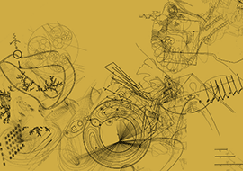

Voir ce projet sur GitHub Nanterre/donnees-a-voir

Documentation "Données à voir" la Terrasse : espace d'art de Nanterre, du 7 octobre au 23 décembre 2016.
Vous pouvez proposer du contenu en proposant des modifications directement par GitHub, par les commentaires en bas de pages ( si vous êtes sur l’ordinateur de la galerie, notez que vos commentaires sont anonymes par défaut ), ou bien en envoyant un mail à 0698@free.fr .
Ce site est intégralement sous Licence GPL. Les images utilisées sont celles présentes dans les liens de la documentation, si vous trouvez une image dont vous possédez les droits, envoyez un message à 0698@free.fr .
Sur chacune des pages de la documentation vous trouvez tout en bas un espace pour vos commentaires. Merci de vous exprimer, ça nous intéresse !